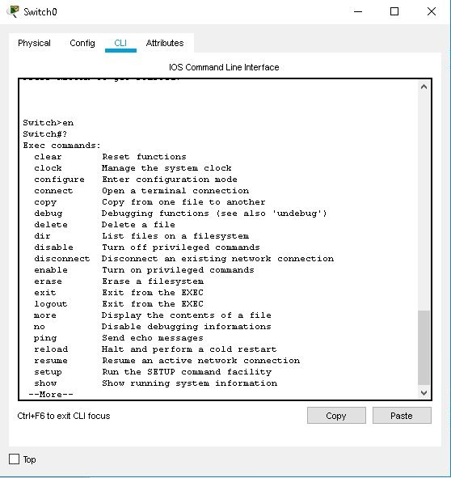
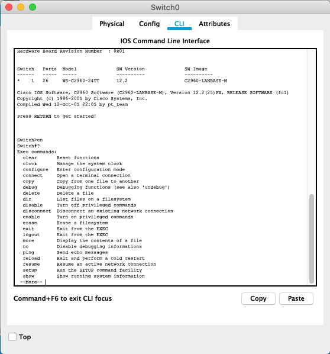

Switches: IOS
Packet Tracer uses a simplified model of the Cisco IOS. Click on the CLI tab in the switch configuration window to access the Cisco IOS command line interface for the switch. Use the Copy and Paste buttons to copy and paste text to and from the command line. This page lists the Cisco IOS command tree for Packet Tracer switches. For the Cisco Catalyst 3560-PS switch with Layer 3 capabilities, refer to the "Router IOS" page for additional commands. The tree contains only Cisco IOS command chains that are supported in Packet Tracer.


User Mode
- <1-99>
- connect WORD
- disconnect <1-16>
- enable <0-15>
- exit
- logout
- ping WORD
- resume [ <1-16> | WORD ]
-
show
- arp
-
cdp
-
entry
- * [ protocol | version ]
- WORD [ protocol | version ]
-
interface
- Ethernet <0-9>/<0-24>[.][<0-4294967295>]
- FastEthernet <0-9>/<0-24>[.][<0-4294967295>]
- GigabitEthernet <0-9>/<0-24>[.][<0-4294967295>]
- neighbors [ detail ]
- clock
- crypto key mypubkey rsa
-
etherchannel
- load-balance
- port-channel
- summary
- flash:
- history
-
interface
- Ethernet <0-9>/<0-24> [ switchport ]
- FastEthernet <0-9>/<0-24> [ switchport ]
- GigabitEthernet <0-9>/<0-24> [ switchport ]
- Vlan <1-1005>
- etherchannel
- switchport
- trunk
-
ip interface
- ipv6 interface Vlan <1-1005>
-
mac address-table
- dynamic
-
interfaces
- Ethernet <0-9>/<0-24>
- FastEthernet <0-9>/<0-24>
- GigabitEthernet <0-9>/<0-24>
- Port-channel <1-64>
- static
- mls [ qos ] [ interface ] [ FastEthernet <0-9>/<0-24> ]
- privilege
- rep topology
- sessions
- ssh
- tcp [ brief ]
- terminal
- users
- version
-
vlan
- brief
- id <1-1005>
- name [ WORD ]
- vtp [ counters | status ]
- telnet [ WORD ]
- terminal history size [ <0-256> ]
- traceroute WORD
|
Enable Mode
Global Mode
Ethernet / FastEthernet / GigabitEthernet Interface Mode
- cdp enable
- channel-group <1-6> mode [ active | auto | desirable | on | passive ]
- channel-protocol [ lacp | bagp ]
- description LINE
- duplex [ auto | full | half ]
- exit
- mac-address H.H.H
- mdix auto
-
mls qos
- cos <0-7>
- trust [ cos | device cisco-phone | dscp ]
-
no
- cdp enable
- channel-group
- channel-protocol
- description
- duplex
- mac-address
- mdix auto
-
mls qos
- cos <0-7>
- trust [ cos | device cisco-phone | dscp ]
-
ptp
-
announce
- delay-req interval
- enable
-
sync
-
rep
- reg segment
- rep lsl-age-timer
- shutdown
-
spanning-tree
- bpduguard
- guard
- link-type
- portfast
-
vlan WORD port-priority
- speed
- storm-control broadcast level
-
switchport
- access vlan
- mode
- native vlan
- nonegotiate
-
port-security
-
mac-address
- maximum
-
violation
- priority extend
- trunk [ allowed | native ] vlan
-
voice vlan
-
tx-ring-limit
-
ptp
-
announce
- delay-req interval
- enable
-
sync
-
rep
- reg segment
- rep lsl-age-timer
- shutdown
-
spanning-tree
- bpduguard [ disable | enable ]
- guard root
- link-type [ point-to-point | shared ]
- portfast [ disable | trunk ]
-
vlan WORD port-priority <0-240>
- speed [ 10 | 100 | 1000 | auto ] (10/100 options are only available for FastEthernet and GigabitEthernet interfaces and 10/100/1000 options are only available for GigabitEthernet interfaces respectively)
- storm-control broadcast level <0.0-100.0>
-
switchport
- access vlan <1-1005>
-
mode
- access
- dynamic [ auto | desirable ]
-
trunk
- native vlan <1-1005>
- nonegotiate
-
port-security
-
mac-address
- maximum <1-132>
-
violation [ protect | restrict | shutdown ]
- priority extend cos <0-7>
-
trunk
-
allowed vlan
- WORD
- add <1-1005>
- all
- except <1-1005>
- none
-
remove <1-1005>
-
native vlan <1-1005>
-
voice vlan <1-1005>
- tx-ring-limit <1-32767>
|
VLAN Interface Mode
- arp timeout <0-2147483>
- description LINE
- exit
-
ip
- address [ A.B.C.D A.B.C.D | dhcp ]
-
helper-address A.B.C.D
-
no
- arp timeout
- description
-
ip
- address [ dhcp ]
-
helper-address A.B.C.D
- shutdown
-
standby
-
<0-4095>
- FastEthernet <0-9>/<0-24>[.][<0-4294967295>]
- GigabitEthernet <0-9>/<0-24>[.][<0-4294967295>]
- Serial Ethernet <0-9>/<0-24>[.][<0-4294967295>]
- ip A.B.C.D
- ipv6 autoconfig
- preempt
-
priority
- preempt
- priority
-
track
- FastEthernet <0-9>/<0-24>[.][<0-4294967295>]
- GigabitEthernet <0-9>/<0-24>[.][<0-4294967295>]
-
Serial Ethernet <0-9>/<0-24>[.][<0-4294967295>]
- shutdown
-
standby
-
<0-4095>
- FastEthernet <0-9>/<0-24>[.][<0-4294967295>]
- GigabitEthernet <0-9>/<0-24>[.][<0-4294967295>]
- Serial Ethernet <0-9>/<0-24>[.][<0-4294967295>]
- ip A.B.C.D
- ipv6 autoconfig
- preempt
-
priority
- preempt
- priority
-
track
- FastEthernet <0-9>/<0-24>[.][<0-4294967295>]
- GigabitEthernet <0-9>/<0-24>[.][<0-4294967295>]
-
Serial Ethernet <0-9>/<0-24>[.][<0-4294967295>]
|
VLAN Configuration Mode
- exit
- name WORD The ascii name for the VLAN
-
no
- name Ascii name of the VLAN
|
Line Configuration Mode
- access-class [ <1-199> | <1300-2699> | WORD ] [ in | out ]
- databits [ 5 | 6 | 7 | 8 ]
-
default [ databits | flowcontrol | history size |
parity | speed | stopbits ]
- exec-timeout <0-35791> Timeout in minutes
- exit
- flowcontrol [ NONE | hardware | software ]
- history size <0-256>
- ipv6 access-class Filter connections based on an IPv6 access list
- logging synchronous Synchronized message output
- login [ local ]
- motd-banner
- no [ access-class [ <1-199> | <1300-2699> | WORD ] [ in | out ] | databits | flowcontrol | history size | ipv6 | login | motd-banner | parity | password | speed | stopbits ]
- parity [ even | mark | none | odd | space ]
-
password
- privilege level Assign default privilege level for line
- speed <0-4294967295>
- stopbits [ 1 | 1.5 | 2 ]
- transport output Define which protocols to use for outgoing connections
|
Rommon Mode
- boot
- dir flash:
- flash_init
- help
- reset
- set
- unset variable
- variable=value
|
L2Nat Mode
- exit
- inside
- from
- host [ A.B.C.D ] to [ A.B.C.D ]
- network [ A.B.C.D ] to [ A.B.C.D ] mask | [ A.B.C.D ]
- range [ A.B.C.D ] to [ A.B.C.D ] <2-128>
-
no
- inside
-
from
- host [ A.B.C.D ] to [ A.B.C.D ]
- network [ A.B.C.D ] to [ A.B.C.D ] mask | [ A.B.C.D ]
- range [ A.B.C.D ] to [ A.B.C.D ] <2-128>
-
outside
-
from
- host [ A.B.C.D ] to [ A.B.C.D ]
- network [ A.B.C.D ] to [ A.B.C.D ] mask | [ A.B.C.D ]
- range [ A.B.C.D ] to [ A.B.C.D ] <2-128>
-
outside
-
from
- host [ A.B.C.D ] to [ A.B.C.D ]
- network [ A.B.C.D ] to [ A.B.C.D ] mask | [ A.B.C.D ]
- range [ A.B.C.D ] to [ A.B.C.D ] <2-128>
|